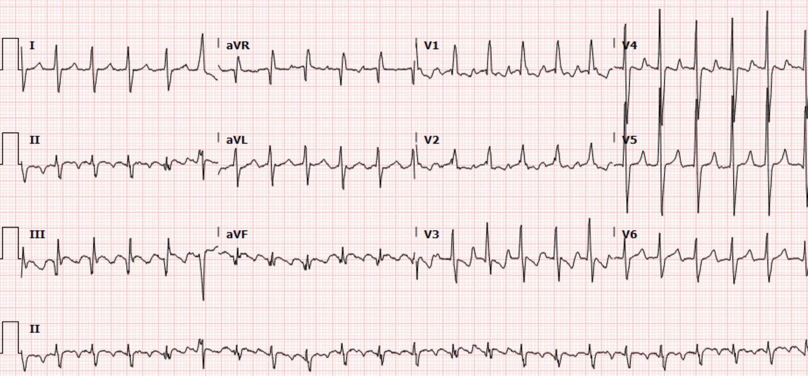
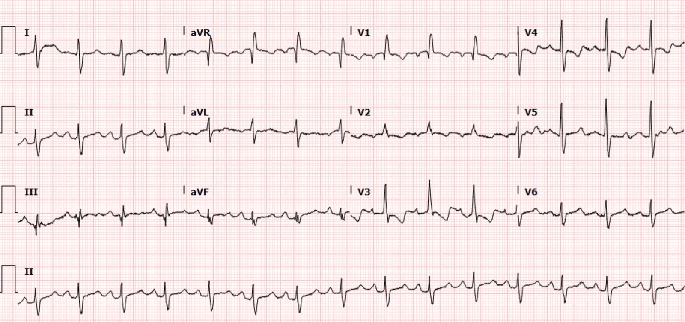
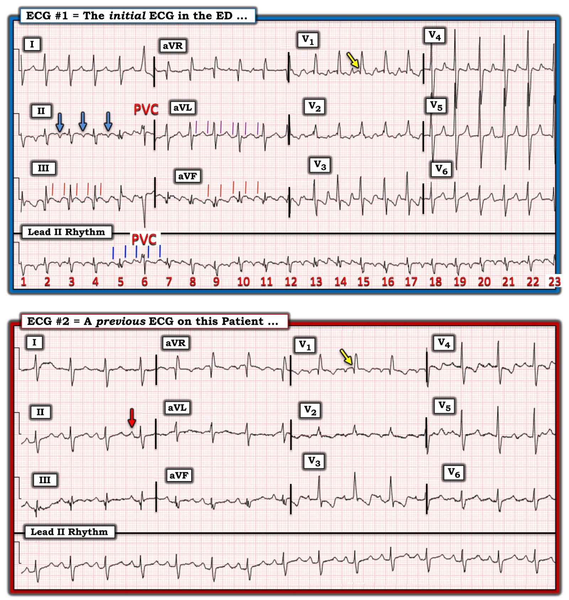

14/08/2023 — Điện tâm đồ cho thấy gì ở bệnh nhân đau ngực, hạ huyết áp, khó thở và giảm oxy máu này?
Bản dịch tiếng Việt của bài "What does the ECG show in this patient with chest pain, hypotension, dyspnea, and hypoxemia?" – Dr. Smith’s ECG Blog. Giữ nguyên toàn bộ 4 hình ảnh của bản gốc.
Tác giả Pendell Meyers, với một số chỉnh sửa của Smith
Một người đàn ông ở độ tuổi 40, có nhiều bệnh đồng mắc, đến khoa cấp cứu (ED) vì đau ngực, hạ huyết áp, khó thở và giảm oxy máu.
Siêu âm tim tại giường cho thấy thất phải (RV) lớn (Điều này có nghĩa căn nguyên là thuyên tắc phổi hay không?)
Đây là điện tâm đồ lúc phân loại (triage) của bệnh nhân:


Nhịp là cuồng nhĩ 2:1. Sóng cuồng nhĩ có thể che lấp hoặc bắt chước các dấu hiệu tái cực do thiếu máu cục bộ, nhưng ở đây tôi không thấy dấu hiệu rõ ràng nào của OMI hay thiếu máu cục bộ dưới nội tâm mạc.
QRS rộng khoảng 100 msec (hẹp), nhưng có hình dạng rất bất thường, gồm sóng R lớn ở V1, sóng S sâu ở I, sóng R ở aVR. Nếu đây là RBBB thì phải là RBBB không hoàn toàn, vì thời gian QRS dưới 120 ms.
Tuy nhiên, V1 KHÔNG có dạng rSR’ như ta sẽ thấy ở RBBB hoàn toàn hoặc không hoàn toàn. Thay vào đó là dạng qR. (Ngoại lệ: có thể thấy qR trong RBBB nếu có nhồi máu cơ tim vùng vách cũ). Cũng có sóng R lớn ở V2 và V3, tất cả đều chỉ điểm phì đại thất phải.
ST chênh xuống ở V1-V3 có thể khiến bạn nghĩ tới OMI thành sau; tuy nhiên, tất cả đều ngược hướng với sóng R bất thường. Các bất thường tái cực đều là thứ phát (là hậu quả) của QRS bất thường (RVH). Đây là những bất thường tái cực rất điển hình của RVH.
Khi bạn nghi thuyên tắc phổi vì thấy RV lớn trên siêu âm tại giường (POCUS), hãy luôn tìm trục lệch phải và sóng R lớn ở V1, vì RV lớn có thể hoàn toàn do RVH mạn tính, chứ không phải PE cấp. PE không biểu hiện sóng R lớn ở V1 trừ khi đó là RBBB hoặc iRBBB.
RVH mạn tính là do tăng áp phổi mạn tính, và những bệnh nhân này cực kỳ khó xử trí khi họ bị bệnh cấp tính.
Cũng có gợi ý tăng kali máu với sóng T nhọn, nhưng tôi không lấy được nồng độ kali trong ca này.
Có sẵn một điện tâm đồ cũ để so sánh:


Có thể thấy QRS về cơ bản giống bản cũ. RVH không phải mới. Lưu ý ST chênh xuống (STD) tối đa ở V3-4. Điều này KHÔNG chỉ điểm OMI thành sau vì nó thứ phát sau QRS rất bất thường do RVH tạo ra.
Không thể học tốt việc nhận diện OMI bằng cách đọc chữ, nhưng “câu” hay “tiêu chuẩn” tốt nhất của chúng tôi để giúp người học nhận ra OMI thành sau là: Trong bối cảnh triệu chứng cấp tính nghi ngờ ACS, ST chênh xuống tối đa ở V1-V4 (không có nguyên nhân là QRS bất thường) là đặc hiệu cho OMI thành sau cho tới khi chứng minh được điều ngược lại. Đây là một trong những trường hợp QRS bất thường gây ra STD tối đa ở V1-V4, theo nguyên lý ngược hướng phù hợp (appropriate discordance).
Hồ sơ bệnh án điện tử cho thấy bệnh nhân này có tiền sử đã biết gồm tăng áp phổi, bệnh hồng cầu hình liềm phải truyền máu thường xuyên, suy tim sung huyết (CHF), bệnh phổi hạn chế kèm suy hô hấp giảm oxy mạn tính phải thở oxy tại nhà, bệnh thận mạn (CKD), ngưng thở tắc nghẽn khi ngủ (OSA) phải thở BIPAP hằng đêm, và thuyên tắc phổi mạn tính. Rõ ràng anh ấy có nhiều lý do để bị tăng áp phổi.
Còn xử trí thì sao?
1) Sẽ có ích nếu sốc điện chuyển nhịp về nhịp xoang
——Điều này sẽ cải thiện phần đóng góp của nhĩ vào việc đổ đầy thất.
2) Norepinephrine để nâng đỡ huyết áp.
——Điều này rất quan trọng để duy trì tưới máu thất phải. Bình thường RV là buồng áp lực thấp, và tưới máu diễn ra cả trong tâm thu lẫn tâm trương (khác với LV, vốn chỉ được tưới máu trong tâm trương khi cái bơm không co bóp). Nhưng trong tăng áp phổi, tưới máu RV giảm mạnh, nhất là khi có hạ huyết áp. Điều này dẫn tới một “vòng xoắn bệnh lý” trong suy thất phải cấp trên nền mạn.
Chụp CT mạch phổi (CTPA) chỉ cho thấy gánh nặng huyết khối PE mạn tính đã biết của bệnh nhân, không có PE cấp.
Bệnh nhân bệnh nặng nguy kịch với diễn biến phức tạp, và cuối cùng có kết cục không tốt.
Xem các ca RVH khác sau đây:
An elderly woman with shortness of breath and an ECG that helps understand it (Một phụ nữ lớn tuổi bị khó thở và một điện tâm đồ giúp hiểu được tình trạng đó)
21 year old woman with CP, SOB, then syncope, and with ST depression with T-wave inversion in V1-V3 (Phụ nữ 21 tuổi đau ngực, khó thở, sau đó ngất, kèm ST chênh xuống và sóng T đảo ngược ở V1-V3)
ST Depression and T-wave inversion in V2 and V3. (ST chênh xuống và sóng T đảo ngược ở V2 và V3.)
A 50-something male with Dyspnea (Một người đàn ông ngoài 50 tuổi bị khó thở)
This was texted to me by a former resident. An 80-something woman who presented with chest pain and dyspnea. (Một cựu bác sĩ nội trú đã nhắn tin gửi tôi điện tâm đồ này. Một phụ nữ ngoài 80 tuổi đến khám vì đau ngực và khó thở.)
What is going on in V2 and V3, with a troponin I rising to 1826 ng/L at 4 hours? (Chuyện gì đang xảy ra ở V2 và V3, với troponin I tăng lên 1826 ng/L lúc 4 giờ?)
55 year old woman with chest pain and precordial T-wave Inversions (Phụ nữ 55 tuổi đau ngực và sóng T đảo ngược ở các chuyển đạo trước tim)

===================================
BÌNH LUẬN CỦA TÔI, bởi KEN GRAUER, MD (14/8/2023):
===================================
Bản ghi ban đầu hôm nay thật đầy thử thách! — nhất là khi ấn tượng đầu tiên của tôi được đưa ra mà không có lợi thế của thông tin lâm sàng. Tôi tập trung bình luận vào một số điểm bổ sung cho những điểm đã được nêu trong phần bàn luận của Dr. Meyers.
- Để cho rõ, trong Hình 1 — tôi đã sao lại và đánh nhãn 2 điện tâm đồ trong ca hôm nay.
- LƯU Ý: Lý do tôi thấy điện tâm đồ ban đầu hôm nay đầy thử thách như vậy — là vì cả về nhịp lẫn về phần còn lại của bản ghi 12 chuyển đạo này — đều có một chẩn đoán phân biệt, chứ không phải một câu trả lời chắc chắn duy nhất. Thay vì một chẩn đoán duy nhất cho nhịp và cho điện tâm đồ 12 chuyển đạo — theo tôi, cách đọc tối ưu đòi hỏi nhận thức được sự cần thiết của thông tin lâm sàng bổ sung trước khi chúng ta có thể chốt “Câu trả lời”.


SUY NGHĨ CỦA TÔI về Nhịp Hôm nay:
Tôi nghĩ nhịp trong bản ghi ban đầu hôm nay ( = điện tâm đồ #1 trong Hình 1) được mô tả tốt nhất là một SVT (nhịp nhanh trên thất – SupraVentricular Tachycardia) đều với tần số ~140/phút.
- Mặc dù phức bộ QRS ở điện tâm đồ #1 trông hơi rộng — tôi đo được thời gian QRS = 0,10 giây (tức là một nửa ô lớn trên giấy kẻ ô điện tâm đồ) — tức là ở giới hạn trên của bình thường đối với thời gian QRS.
- Có hoạt động nhĩ ở điện tâm đồ #1 — dưới dạng một sóng lệch âm xuất hiện gần điểm giữa khoảng R-R ở chuyển đạo II (các mũi tên XANH LAM).
- Có 1 nhát trông khác biệt ( = nhát #6 trên dải nhịp chuyển đạo II dài của điện tâm đồ #1). Có lẽ nhát #6 là một PVC (ngoại tâm thu thất – Premature Ventricular Contraction) — vì nó rộng hơn và trông rất khác so với các nhát khác trong bản ghi này. Có lẽ cũng có một mức độ hỗn hợp (fusion) giữa PVC này với các nhát trên thất nền.
Điểm MẤU CHỐT: Thay vì vội đưa ra một chẩn đoán nhịp cụ thể — tôi ưu tiên lập một chẩn đoán phân biệt. Trên thực tế — tuyệt đại đa số các nhịp SVT đều gặp trong môi trường cấp cứu rốt cuộc sẽ là một trong 4 chẩn đoán sau đây thuộc DANH SÁCH: i) Nhịp nhanh xoang; ii) Một nhịp SVT vào lại (tức là AVNRT hoặc AVRT); iii) ATach ( = nhịp nhanh nhĩ – Atrial Tachycardia); hoặc, iv) AFlutter (cuồng nhĩ – Atrial Flutter).
- Như tôi vẫn thường điểm lại trong các bình luận trên Dr. Smith’s ECG Blog (Xem bài ngày 1 tháng Năm năm 2023, cùng nhiều bài khác) — việc xem xét một vài yếu tố thường sẽ thu hẹp chẩn đoán phân biệt này chỉ trong vài giây.
- Nhịp ở điện tâm đồ #1 không phải nhịp nhanh xoang — vì không có sóng P dương ở chuyển đạo II. Thay vào đó, ta thấy một sóng lệch âm (được đánh dấu bằng các mũi tên XANH LAM) — cũng như một sóng lệch dương tròn ở bên phải các mũi tên xanh lam, trông quá rộng để là sóng P xoang.
- Tôi không tin lắm rằng nhịp này là một SVT vào lại. Như tôi điểm lại trong bình luận ở cuối trang của bài ngày 6 tháng Ba năm 2020 trên Dr. Smith’s ECG Blog — hoạt động nhĩ âm được đánh dấu bằng các mũi tên XANH LAM có vẻ nằm sai vị trí đối với cả AVNRT (trong đó khoảng RP’ rất ngắn, thường không vượt quá sóng S của QRS) — lẫn AVRT (trong đó khoảng RP’ thường không vượt quá điểm giữa đoạn ST). Dù nhịp này có thể phản ánh thể “nhanh-chậm” của AVNRT (tức là như trong Hình 3 của tôi ở bài ngày 6 tháng Ba năm 2020) — thể “nhanh-chậm” này của AVNRT rất hiếm gặp, và thường biểu hiện sóng lệch âm nhọn hơn và sâu hơn đối với sóng P ngược dòng.
- Nhịp này có thể là ATach. Dù vậy — dẫn truyền 1:1 nghiêm ngặt trong ATach là một dạng SVT tương đối ít gặp trong môi trường cấp cứu không chọn lọc (tức là thường sẽ có nhịp theo nhóm với dẫn truyền Wenckebach và/hoặc một khoảng ngưng nào đó trong cơn SVT).
- Điều này để lại cho chúng ta AFlutter. Theo kinh nghiệm của tôi — AFlutter dẫn truyền AV 2:1 hơn hẳn mọi nguyên nhân khác là nguyên nhân thường bị bỏ sót nhất của một nhịp SVT chưa được chẩn đoán — nhất là khi không có sóng P xoang, và tần số thất của nhịp gần với ~150/phút (tức là khoảng thường gặp ~130-160/phút).
- Cách DỄ NHẤT để tránh bỏ sót chẩn đoán AFlutter là: i) Tự nhắc mình rằng AFlutter là nhịp SVT bị bỏ sót nhiều nhất, hơn hẳn các nhịp khác — vì vậy chúng ta cần luôn luôn nghĩ tới chẩn đoán này mỗi khi thấy bất kỳ nhịp SVT đều nào ở ~130-160/phút mà không có sóng P xoang; ii) Nhớ rằng khi bạn thấy hoạt động nhĩ gần điểm giữa khoảng R-R trong một nhịp nhanh (như được đánh dấu bằng các mũi tên XANH LAM) — thì rất thường sẽ có hoạt động nhĩ 2:1 (với sóng P thứ 2 ẩn trong phức bộ QRS); và, iii) Hãy dùng compa đo (calipers)! (tức là Đặt compa đúng bằng 1/2 khoảng R-R — rồi tìm khắp cả 12 chuyển đạo xem CÓ bất kỳ sóng lệch nào mà bạn có thể “dò bước” theo tỷ lệ 2:1 này hay không).
ĐIỀU CỐT LÕI về Nhịp ở điện tâm đồ #1:
Mặc dù tôi không chắc chắn 100% về chẩn đoán nhịp sau khi xem điện tâm đồ #1 — tôi biết nhịp này không phải nhịp nhanh xoang — và nghĩ rằng cả SVT vào lại lẫn ATach đều ít có khả năng — để lại AFlutter là chẩn đoán có khả năng nhất.
- Đặt compa đo của tôi đúng bằng 1/2 khoảng R-R — tôi đã có thể “dò bước” được hoạt động nhĩ 2:1 đối với các sóng lệch dương tròn ở chuyển đạo III và aVF (các vạch ĐỎ) — cũng như đối với các sóng lệch âm tròn ở chuyển đạo aVL (các vạch TÍM).
- Dù không hẳn có dạng “răng cưa” thường thấy của AFlutter điển hình — hoạt động nhĩ 2:1 này — với tần số thất ~140/phút — sẽ cho tần số nhĩ ~140 X 2 ~ 270-280/phút, gần như xác nhận chẩn đoán AFlutter ngay cả trước khi điều trị (tức là các SVT vào lại và ATach thường không nhanh đến mức này).
- Điểm cuối cùng về nhịp: Tôi luôn tìm một “chỗ ngắt” trong nhịp SVT — vì sự thay đổi nhẹ trong tiết tấu của nhịp thường cung cấp manh mối “tố giác” nguyên nhân. Tôi tin rằng các vạch XANH LAM trên dải nhịp chuyển đạo II dài ủng hộ chẩn đoán AFlutter — bằng cách cho thấy những gì có vẻ là sóng cuồng nhĩ không bị gián đoạn trước và sau PVC.
===================================
SUY NGHĨ CỦA TÔI về điện tâm đồ 12 chuyển đạo:
Như Dr. Meyers đã nêu — sóng cuồng nhĩ có thể làm thay đổi hình dạng của sóng ST-T nền — đôi khi bắt chước hoặc che lấp các thay đổi ST-T bất thường do thiếu máu cục bộ hay do nguyên nhân khác.
- Ví dụ — Chẳng phải trông như có ST dạng vòm (coving) kèm ST chênh lên nhẹ ở các chuyển đạo dưới trên điện tâm đồ #1 trong lúc AFlutter hay sao? Dù chúng ta không có điện tâm đồ theo dõi ở bệnh nhân hôm nay — tôi ngờ rằng một khi tần số chậm lại và nhịp chuyển về xoang, “hình ảnh giả ST chênh lên” này sẽ biến mất.
Thế còn sóng R cao ở chuyển đạo V1 của điện tâm đồ #1 thì sao?
Tôi nghĩ dấu hiệu thú vị nhất trên bản ghi 12 chuyển đạo hôm nay là sóng R cao ở chuyển đạo V1.
- Bệnh nhân này có IRBBB (blốc nhánh phải không hoàn toàn – Incomplete Right Bundle Branch Block) — được xác định bởi dạng qR ở chuyển đạo V1 bên phải với phần dương chiếm ưu thế ở chuyển đạo này — kèm theo sóng S tận hơi rộng ở tất cả các chuyển đạo bên (tức là ở các chuyển đạo I, aVL, V6).
- Như tôi đã nói ở trên — QRS có thời gian ở giới hạn trên của bình thường, nhưng không rộng ra (tức là ~0,10 giây) — đó là lý do đây là RBBB “không hoàn toàn” (chứ không phải hoàn toàn).
- Như tôi đã bàn chi tiết trong bình luận của tôi ở cuối trang của bài ngày 12 tháng Hai năm 2023 trên Dr. Smith’s ECG Blog — chẩn đoán RVH (phì đại thất phải – Right Ventricular Hypertrophy) trên điện tâm đồ là khó. Đó là vì không có một dấu hiệu điện tâm đồ đơn lẻ nào tự nó có giá trị chẩn đoán — mà thay vào đó, chẩn đoán RVH trên điện tâm đồ được đặt ra bằng cách nhận ra một tổ hợp các dấu hiệu điện tâm đồ ở một bệnh nhân có bệnh sử lâm sàng phù hợp với RVH.
- Bản thân IRBBB là một trong các dấu hiệu điện tâm đồ phù hợp với (gợi ý) RVH.
- Dù khó phân định khả năng có sóng ST-T đảo ngược ở các chuyển đạo dưới và trước trên điện tâm đồ #1, do nhịp là AFlutter với tần số nhanh và không có bản ghi theo dõi — tôi ngờ rằng các sóng lệch âm thấy ở chuyển đạo III, aVF và V3 có thể vẫn tồn tại sau khi chuyển về nhịp xoang, do đó gợi ý khả năng “tăng gánh” thất phải (RV “strain”).
- Dù khó phân định với IRBBB (vốn theo định nghĩa tạo ra sóng S tận ở chuyển đạo V1) — dường như có dạng S1Q3T3 trên điện tâm đồ #1.
- ĐIỂM THEN CHỐT (PEARL): Dù một rối loạn dẫn truyền kiểu RBBB (RBBB hoàn toàn hoặc không hoàn toàn) có thể mất sóng lệch dương ban đầu (sóng r) ở chuyển đạo V1 do nhồi máu vách — khi có các dấu hiệu điện tâm đồ khác gợi ý RVH — dạng qR ở chuyển đạo V1 thường đóng vai trò là dấu chỉ điểm của tăng áp phổi (minh họa sinh lý bệnh của dấu hiệu điện tâm đồ này ở Hình 2 trong bình luận của tôi tại bài ngày 12 tháng Hai năm 2023).
Tổng hợp lại tất cả:
Điện tâm đồ ban đầu trong ca hôm nay gợi ý mạnh rằng nhịp là AFlutter dẫn truyền AV 2:1, với tần số thất ~140/phút. Dù ưu tiên số 1 sẽ là kiểm soát đáp ứng thất (và lý tưởng là chuyển nhịp về xoang) — các dấu hiệu IRBBB với dạng qR ở chuyển đạo V1 — kèm dạng S1Q3T3 và có thể có tăng gánh thất phải — gợi ý RVH là chẩn đoán thống nhất, có thể kèm tăng áp phổi, nếu không muốn nói là còn có cả “tăng gánh” thất phải cấp.
- Đến lúc này — tôi được xem một điện tâm đồ trước đó của bệnh nhân này ( = điện tâm đồ #2 trong Hình 1) — và biết được tiền sử (tức là bệnh hồng cầu hình liềm với nhiều lần vào cấp cứu để truyền máu, suy tim, suy thận và tăng áp phổi do bệnh phổi hạn chế kèm suy hô hấp giảm oxy máu mạn tính, cùng tiền sử nhiều lần thuyên tắc phổi trước đây) của bệnh nhân.
So sánh điện tâm đồ #1 với một bản ghi trước đó:
Tôi thấy việc so sánh 2 bản ghi trong Hình 1 rất có ích:
- Nhịp xoang hiện diện trên điện tâm đồ trước đó (mũi tên ĐỎ ở chuyển đạo II của điện tâm đồ #2). Lưu ý sóng P dương với khoảng PR bình thường này ở điện tâm đồ #2 tương phản thế nào với sóng lệch âm ở điểm giữa khoảng R-R trên điện tâm đồ #1 (mũi tên XANH LAM). Hãy nhớ rằng hoạt động nhĩ gần điểm giữa khoảng R-R trong một nhịp nhanh thường báo hiệu sự hiện diện của hoạt động nhĩ 2:1!
- Lưu ý rằng hoạt động nhĩ 2:1 đều đặn chính xác thấy trên điện tâm đồ #1 (tức là các vạch ĐỎ và TÍM thấy ở chuyển đạo III, aVF và aVL) đã không thấy trên điện tâm đồ trước đó — ủng hộ nhận định của chúng tôi rằng các sóng lệch tròn này đại diện cho hoạt động cuồng nhĩ 2:1.
- IRBBB với dạng qR ở chuyển đạo V1 (các mũi tên VÀNG trên cả hai bản ghi) + sóng ST-T đảo ngược ở các chuyển đạo V1 đến V4 đã có mặt trên điện tâm đồ trước đó — phù hợp với tiền sử lâu năm của bệnh nhân này về bệnh phổi giai đoạn cuối kèm tăng áp phổi. Điều này xác nhận rằng không có dấu hiệu điện tâm đồ nào trong số này là mới.
- Sóng T ở các chuyển đạo I và V3 đến V6 trên bản ghi trước đó không hề nhọn như trên điện tâm đồ #1 — ủng hộ mối lo ngại của Dr. Meyers rằng bệnh nhân bệnh nặng mạn tính, có bệnh thận lâu năm này có thể đang tăng kali máu.